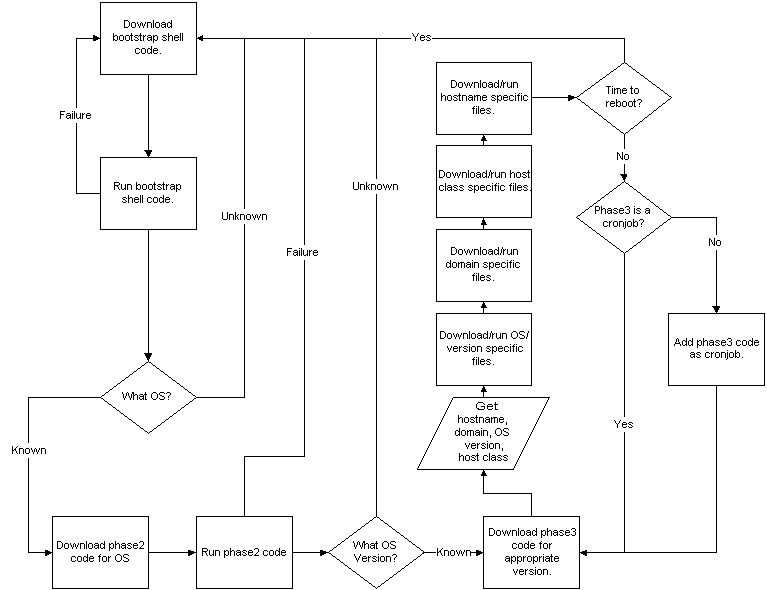

This site will look much better in a browser that supports web standards, but it is accessible to any browser or Internet device.
This design reviews a method for automatically propagating configuration changes to servers via a multi-stage pull mechanism. This will allow changes to be made once in a central location and have the changes propagate at a known regular interval.
Grier Johnson
- Author
Chuck McIntyre
- Concept
Currently there is no configuration management to speak of for our production data center. Simple things like changing the root password would require an admin to touch dozens of servers and manually type "passwd root" on each one. The same thing applies for local accounts, service configuration, software repositories, etc.
Along with the vast amounts of time required to make changes in this fashion manual changes open up the possibility of typos and servers that don't get updated. A production environment without this sort of configuration management requires and army of admins to make changes and clean up the mistakes made during those changes.
The only reasonable competitor in the configuration management space we could be expected to use would be cfengine. Unfortunately cfengine requires an admin team to learn a special "policy" language and limits configuration management to that policy language. What we hope to do with our configuration management is make a modular language that can accept plug-ins from any language from shell to C++ assuming they conform to the API.
So instead of making people become rigidly tied to a special language we want to make something that can adapt to the infrastructure environment instead of the other way around. The learning curve on a modular setup would be very low, as long as a person knew ONE scripting/programming language they'd be able to write customized plug-ins.
In addition to that FLACM will start simple and allow for more complicated actions to be performed on an as-needed basis. An admin team could get a useful level of functionality out of a base FLACM install by only using flat files with no scripting.
The configuration management software will be a multiphase
setup that takes inspiration from computer boot strapping.
Each phase will get progressively more complicated until the
system runs out of phases. The basic flow of the configuration
management software looks like this:

The details of this design can be broken into discussing the different phases of the configuration management itself and the toolkit that will be provided with FLACM to help deal with things like the bootstrap script deployment and FLACM log monitoring.
The bootstrap script is necessarily simple. The bootstrap code is written in Bourne shell for maximum compatibility. It will run from init (when available, in cron elsewhere) and kick off a while loop that attempts to download the OS Initialization script from a hard-coded location. Upon failure the while loop tries again. Upon success the OS Initialization phase is run with exec.
#!/bin/sh
PATH=$PATH:/usr/bin:/usr/sfw/bin
while (true)
do
# Linux and New Solaris
if [ -e /usr/bin/wget || -e /usr/sfw/bin/wget ]
if [ ! -e /space/flacm ]
mkdir -p /space/flacm
elsif [ ! -d /space/flacm ]
rm -rf /space/flacm
mkdir -p /space/flacm
fi
cd /space/flacm
wget http://url/to/script
fi
if [ $? != 0 ]
exec /space/flacm/script
else
sleep 300
fi
done
The bootstrap code executes the "Phase 1" script which gathers a limited amount of OS data and uses that to determine where to grab either the Environmental Initialization (Phase 2) script or the Configuration/Execution (Phase 3) script.
The Phase 1 script contains error checking, unlike or bootstrap code, so that if things fail we can restart the bootstrap and start over. Phase 1 must complete successfully for anything to work, so the accuracy of the error checking is vital here. Phase 1 failing should put a lot of verbose logs into /var/log/flacm/phase1.log if it can so the FLACM Log Checker (see Toolkit) can parse what's going on without an admin having to log into the box.
There are a variety of checks that can be run in Phase 1 determine the base OS. FLACM will initially parse /etc/redhat-release since the code will be written primarily for CentOS servers. FLACM should not be checking patch revisions at this point. That sort of granularity is pushed back into the Phase 2 script which gathers extended environment information.
Once the base OS is determined FLACM should either know how to find a data source that tells it where to get the Phase 2 or Phase 3 script. For the scope of the initial design the location is hard coded into the script with some basic variable swapping to account for different OSes. FLACM then downloads the script and runs it with exec.
Phase 2 is optional in the work flow for FLACM, but can be useful for widely diverse environments that have many different OSes or OSes at a wide range of patch/revision levels.
Phase 2 is a phase for using OS specific tools to gather as large amounts of OS specific data to either feed to Phase 3 or to be used by Phase 2 to accurately point to the correct Phase 3 repository.
Examples of where this would be useful would be OSes that have long support lives, like Solaris, but more-or-less manual patching regimes, like Solaris. Of 30 systems that run Solaris 9 there might be radically different configurations as some systems are running a version of Solaris 9 from 2003 and others are patched all the way to 2006. New directives may have been added to configuration files in that time or old defunct ones may have been taken away.
Due to these possible oddities FLACM uses a separate Phase 2 so that this added complexity can be forgotten all together if an environment doesn't warrant it. Conversely it can be made much more robust if the environment does warrant it.
Phase 3 is, necessarily, the most complicated portion of FLACM since the core functionality resides in this phase.
Phase 3 does a number of tasks. The first thing it needs to do is determine the Domain and Roles of a system. The domain is the environment a server is in, such as QA, Production, Development, etc. The role is the function of the server such as LDAP, DNS, Web, etc. These two aspects along with the OS should define 95% of an environments configuration changes. The other 5% (or less) should be host specific changes.
The domain and roles can be derived from a number of sources.
The first revision of this project will hold the Roles in
a YAML file and the domain will be derived from the FQDN.
A roles file might look like:
# Roles
DNS:
- raptor
- blackbird
LDAP:
- panzer
- awol
WWW:
- predator
MYSQL:
- raptor
KICKSTART:
- predator
A server may have multiple roles, but admins need to be cautious of conflicts in configuration among roles. Once the phase 3 script has the OS, Domain, Role and Host information it downloads the necessary configuration files and scripts from the central repository. The data structure is flat files in a directory hierarchy. An example can be seen below things and
/flacm/OS/{OS Name}/{OS Version}/root/etc
/var
/opt
/scripts/pre
/post
/fix
/flacm/DOMAIN/{Domain Name}/root/etc
/var
/opt
/scripts/pre
/post
/fix
/flacm/ROLES/{Role Name}/root/etc
/var
/opt
/scripts/pre
/post
/fix
/install
/uninstall
/flacm/HOSTS/{Hostname}/root/etc
/var
/opt
/scripts/pre
/post
/fix
Each section has it's own subdirectory under the flacm root. There can be other more specific subdirectories under that. Once the specific subdirectories have been traversed there should be two common directories "root" and "scripts". The "root" directory holds configuration files as they would appear on the file system of the server. For example, an /etc/password for all CentOS 4.2 servers would be placed in /flacm/OS/CentOS/4.2/root/etc/passwd. Actually the file would need to be named passwd.whole or passwd.part, these distinctions are examined in Phase 3 - File Extensions.
The scripts directory holds a number of specifically named scripts that are kicked off at particular times during the configuration process. These scripts are examined in Phase 3 - Scripts.
In order to allow for limited scripting, files placed into configuration management must have one of two file extensions. Files that are the whole configuration file, in that they should completely replace what's already on the system end with a .whole. Files that should be appended to and existing file should end with .part.
A practical example of this would be to have an OS level /etc/sudoers.whole file that replaced the sudoers file on every box of that OS level with a sudoers that gave access to root and the wheel group (or OS equivalent). Then the DOMAIN level would append access (sudoers.part) for the admins of that domain. The ROLES level would then add access for the operators of each of those roles with another sudoers.part. Finally, if the system hosted some sort of one-off script the HOST level would add sudo access for an operator to run that one-off script just for that host.
If a directory contains a {file}.whole AND and {file}.part only the {file}.whole will be used and a message to /var/log/flacm/phase3.log will be recorded.
Additionally each FLACM subsection contains a "scripts" folder. There are 3 acceptable scripts for each section except roles, which has 5. The three main scripts are:
/flacm/.../scripts/pre
/flacm/.../scripts/fix
/flacm/.../scripts/post
The "pre" script is run after the files are downloaded locally but before any files are copied anywhere else. The pre script is where FLACM should be used to install RPM dependencies (from a repository, not FLACM) and basically get the server ready to take the configuration that will be put in place.
The "fix" script is immediately after the pre script. The "fix"
script creates a false root, copies all the files over to it
and chroots into that directory (for example it might run
chroot /falseroot/OS/CentOS/4.2/ after copying
the files from /flacm/OS/CentOS/4.2/ to that directory. This is
the right place to modify permissions. The point behind this
is that many data sources will flatten the permissions on a
file to a single user and group and potentially even a single
read/write permission setup. Creating a false root allows
permissions to be set up first and then copy the files over.
The "post" script is run after all files are copied over to the appropriate places. This script should clean up any temporary files that FLACM created and integrate any new configuration files (like running "newaliases").
The roles section has two more scripts:
/flacm/.../scripts/install
/flacm/.../scripts/uninstall
Roles are the most dynamic property of a server. A server that is an LDAP server will more regularly become a non-LDAP server then it will move out of production or become a different OS. Because of this, the ability to remove a role is important. Also, roles are generally more complicated then other types of configuration and there is often tasks that need to be done once, but never again. For example if LDAP is installed the server no longer needs to point to an external LDAP server, but this only needs to be done once, so it doesn't belong in the "pre" script.
Each time a server figures out its roles it checks for /etc/flacm/roles.conf and checks to see if there are any new roles or removed roles. If there are new roles it runs the install script (after the fix script but before moving any config files). If there are any removed roles it runs the uninstall script from that role.
The phase 3 script should upgrade itself. On a regular basis it should check to see if there is a new version of the script and download it if there is. After a download it should run the new script immediately.
The phase 3 script should check to see if it's in cron. If it is not then it should schedule itself.
The phase 3 script should have a set time that it "reboots" or basically reruns the bootstrap program (in order to get the most current version). The code should also check for a /etc/flacm/.reboot file and reboot immediately if present.
Starting with Phase 1 all scripts should check for an /etc/flacm/.ignore file. If present the scripts do nothing. The logic behind this is that if the FLACM central server is down local changes need to be made, FLACM should not overwrite the changes when the server comes back up. This allows for an extended period of time to get a change put into FLACM.
The FLACM Toolkit is a collection of scripts that help make FLACM more effective. At the initial roll out there will be a script to help deploy the bootstrap script to remote machines.
Other scripts that will be written as time and resources allow are:
For initial roll out e-mail will be sent. Moving forward a FLACM agent should be written that can be queried about status.
FLACM will be rolled out with the initial load test infrastructure at the new data center. Ideally FLACM will cause no downtime for roll out as it lives in userspace.